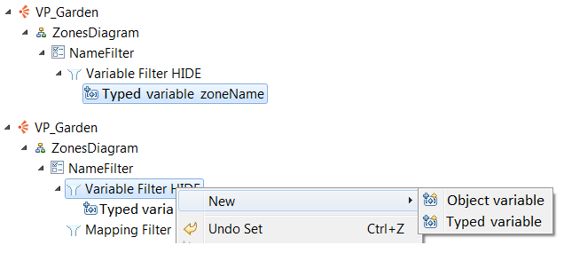

Sirius Evolution Specification: Typed variable for variable filter
Preamble
Summary: Add capability, when user applies a filter, to allow him to enter a value used in variable filter.
| Version |
Status |
Date |
Authors |
Changes |
| v0.1 |
DRAFT |
2015-12-03 |
lfasani |
Initial version. |
Relevant tickets:
Introduction
Currently, there is the capability, when applying a variable filter in a diagram, to allow the user to select one or more objects through selection wizard.
This selection is then used according to the condition expression defined in the VSM by the specifier.
This new feature allows to define a typed value variable in variable filter.
Detailed Specification
The typed variable is a variable of type that is defined by the specifier and which value is filled by the user when applying the variable filter.
This value is then used when applying the variable filter according to the condition expression defined in the VSM by the specifier.
As it is the case for existing object variable, the typed variable is persisted in the representation.
That allows a dynamic behavior which means that the typed value is reused each time the filter is re-applied (for example when using a creation tool).
VSM Side UI
In odesign editor, specifier can add a new typed Variable with contextual menu when clicking on Variable filter.

The property view allows to set
- the name of the variable
- the type of the variable
- an interpreted expression to define the default value
- the documentation that will be displayed to the user
Diagram side UI
When user applies a variable filter, a dialog box is displayed to allow user to enter the value.
This dialog box is prompted after all «Select Model Element» wizard have been prompted.
It contains as many line as number of typed variables under the variable filter.
The specifier documentation is displayed as tooltip on question mark.
The default value is the result of the interpreted expression defined on VSM.

Note that whatever the type of variable is, the field is a text field. This string must follows the rules detailed in «EDataType class instantiation» paragraph.
Technical detailed specification
Here is the Sirius meta-model before changes

VSM side
- diagram/description/FilterVariable is replaced by a new viewpoint/description/TypedVariable class inheriting from SubVariable and containing
- a
documentation of type EString
- a
type of type EDataType. The specifier must select the DataType from the drop-down list. Note that the listed EDataType are those used or defined in the meta-models associated to the DiagramDescription.
- a
defaultValueExpression of type InterpretedExpression. This expression should return a string from which a class corresponding to the
type is instantiable (see «EDataType class instantiation» paragraph). The context of this expression is the semantic element of the diagram. The variable
diagram is also available.
- SelectModelElementVariable and TypedVariable implements a new viewpoint/description/InteractiveVariableDescription. InteractiveVariableDescription is used as marker interface to identify variable that requires user action to be valued.
- diagram/description/VariableFilter.ownedVariables is now of type InteractiveVariableDescription and no more FilterVariable
Representation side
We need to store the variable value defined by the user.
- a new diagram/VariableValue is created and is sub-typed by diagram/TypedVariableValue and diagram/EObjectVariableValue
- diagram/EObjectVariableValue replaces diagram/FilterVariableValue
- FilterVariableHistory.ownedValues is, from now on, a multi-valued EReference of type VariableValue
See the Sirius meta-model after changes

EDataType class instantiation
In order to be instantiable, the value given by the user depends on how it is triggered by EMF mechanism.
If the EFactory of the EDataType is not overloaded, the class corresponding to the EDataType must have a constructor with a String parameter. At instantiation, the string argument will be the string input by the user. This string argument is translated into the right data in the class constructor for example.
What is done is the constructor described above can also be done overloading the EDataType class EFactory.
Example:
If your class represents a point coordinates with two fields x and y of type int, the string input by the user could be ",". This kind of information could be given to the user through the "User documentation"
Backward Compatibility and Migration Paths
Existing VSM or representation have to be migrated.
VSM Change:
- VariableFilter.ownedVariable type is changed to InteractiveVariableDescription.
- FilterVariable instances are migrated to SelectModelElementVariable instances.
Diagram Representation changes:
- FilterVariableHistory.ownedValues type has changed to VariableValue.
- FilterVariableValue instances are migrated to EObjectVariableValues instances
User Interface Changes
From now on, with a Variable filter, specifier can use the new variable «Typed Variable» and the existing "Variable"
The old variable «Variable» is renamed «Select Model Element Variable».
Documentation Changes
This new behavior should be added in the New and Noteworthy documentation.
A note should also be added in the specifier manual to explain this new feature :
- Complete chapter Diagrams/Filter/Variable filter
Tests and Non-regression strategy
New tests will be added to check:
* the creation of a filter with typed variable whose type is EString or custom EDataType
* that the user can fill the value
* that the default variable value is correctly interpreted at runtime
* that the variable value are correctly used in condition expression at runtime when user apply the filter
* that the value is correctly stored in representation and that the filter can be re-applied after tool execution for example.
* only InteractiveVariableDescription are available on VariableFilter when specifier builds its VSM
Implementation choices and tradeoffs